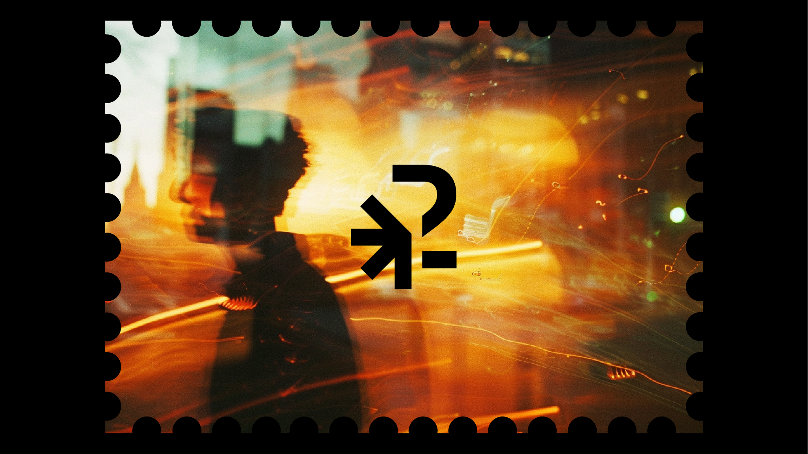
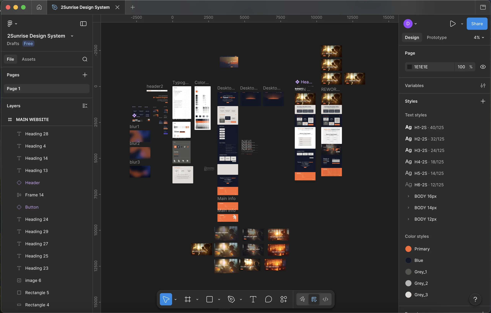
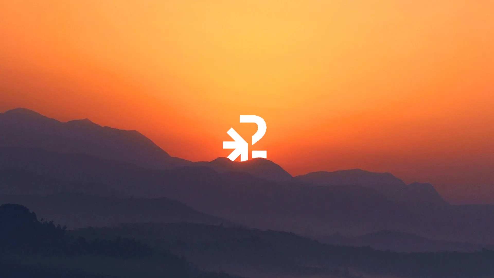
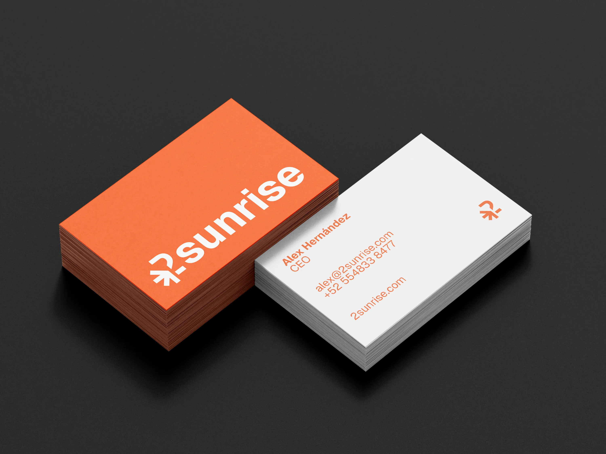
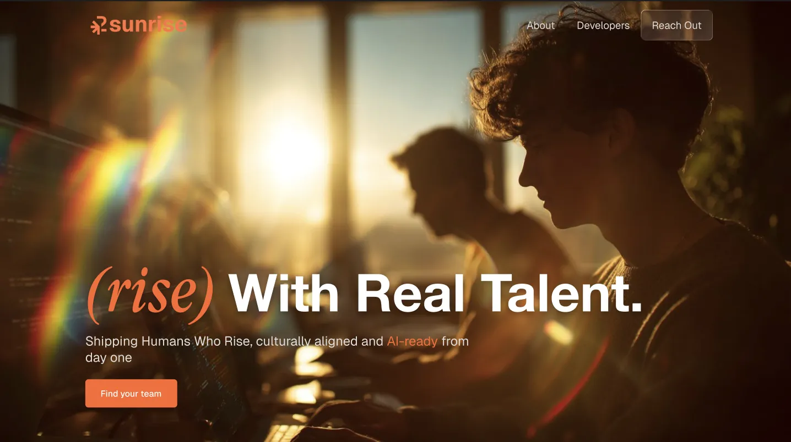
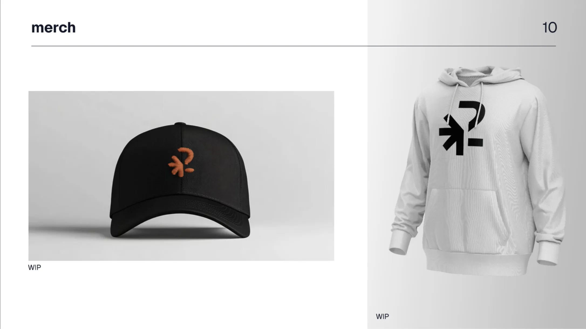
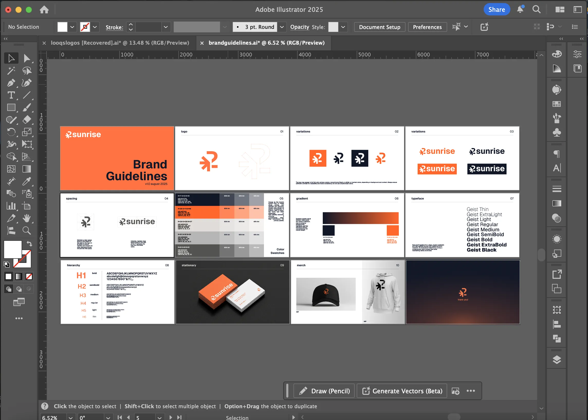
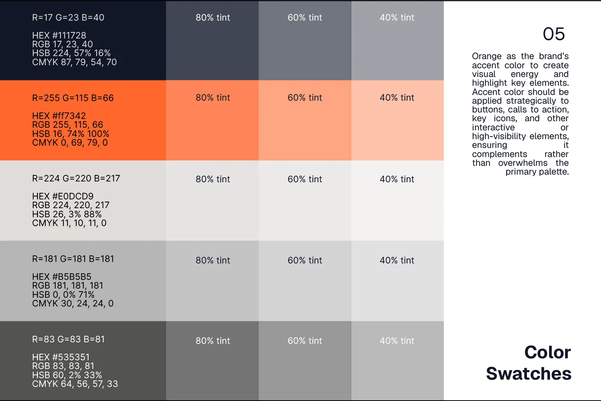
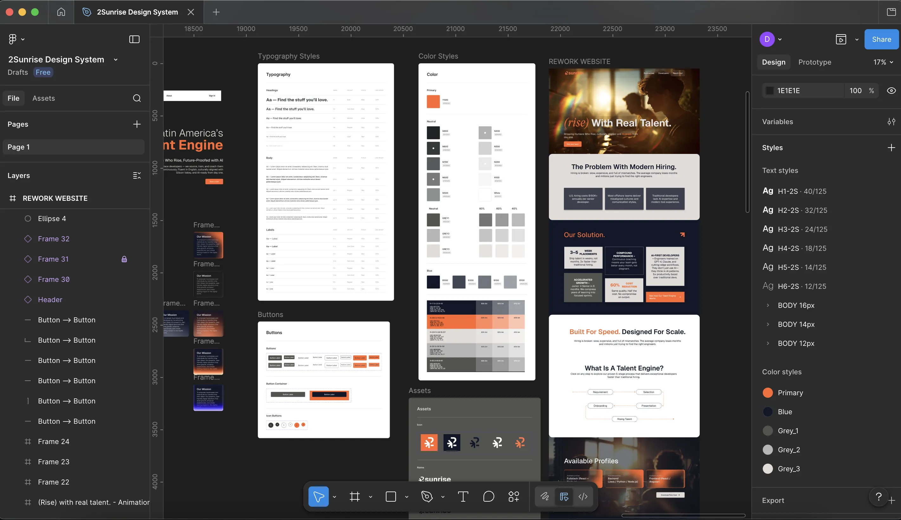

2Sunrise had no visual identity. No wordmark, no color system, no typeface — nothing to communicate who they were or what they stood for. Every touchpoint was a blank slate.
The challenge was building a brand from scratch that could scale — one that would feel intentional and consistent across digital products, marketing, and communications from day one.


Started with a full brand strategy phase — defining the visual language, tone, and positioning before touching a single asset. From there, developed the wordmark and submark across multiple rounds, establishing a tight color system and typographic hierarchy that could flex across contexts.
With the identity locked, moved into digital — designing the full responsive website from wireframes through to high-fidelity UI, plus a branded email signature system that any team member could use consistently.





